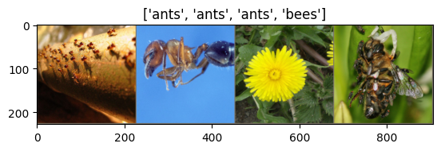

# License: BSD# Author: Sasank Chilamkurthyfrom __future__ import print_function, divisionimport torchimport torch.nn as nnimport torch.optim as optimfrom torch.optim import lr_schedulerimport torch.backends.cudnn as cudnnimport numpy as npimport torchvisionfrom torchvision import datasets, models, transformsimport matplotlib.pyplot as pltimport timeimport osimport copycudnn.benchmark =Trueplt.ion() # interactive mode
<contextlib.ExitStack at 0x7f121e037eb0>
Load Data
We will use torchvision and torch.utils.data packages for loading the data.
The problem we’re going to solve today is to train a model to classify ants and bees. We have about 120 training images each for ants and bees. There are 75 validation images for each class. Usually, this is a very small dataset to generalize upon, if trained from scratch. Since we are using transfer learning, we should be able to generalize reasonably well.
This dataset is a very small subset of imagenet.
.. Note :: Download the data from here and extract it to the current directory.
# Data augmentation and normalization for training# Just normalization for validationdata_transforms = {'train': transforms.Compose([ transforms.RandomResizedCrop(224), transforms.RandomHorizontalFlip(), transforms.ToTensor(), transforms.Normalize([0.485, 0.456, 0.406], [0.229, 0.224, 0.225]) ]),'val': transforms.Compose([ transforms.Resize(256), transforms.CenterCrop(224), transforms.ToTensor(), transforms.Normalize([0.485, 0.456, 0.406], [0.229, 0.224, 0.225]) ]),}data_dir ='/content/drive/MyDrive/Data sets/hymenoptera_data'image_datasets = {x: datasets.ImageFolder(os.path.join(data_dir, x), data_transforms[x])for x in ['train', 'val']}dataloaders = {x: torch.utils.data.DataLoader(image_datasets[x], batch_size=4, shuffle=True, num_workers=4)for x in ['train', 'val']}dataset_sizes = {x: len(image_datasets[x]) for x in ['train', 'val']}class_names = image_datasets['train'].classesdevice = torch.device("cuda:0"if torch.cuda.is_available() else"cpu")
/usr/local/lib/python3.10/dist-packages/torch/utils/data/dataloader.py:561: UserWarning: This DataLoader will create 4 worker processes in total. Our suggested max number of worker in current system is 2, which is smaller than what this DataLoader is going to create. Please be aware that excessive worker creation might get DataLoader running slow or even freeze, lower the worker number to avoid potential slowness/freeze if necessary.
warnings.warn(_create_warning_msg(
Visualize a few images
Let’s visualize a few training images so as to understand the data augmentations.
def imshow(inp, title=None):"""Display image for Tensor.""" inp = inp.numpy().transpose((1, 2, 0)) mean = np.array([0.485, 0.456, 0.406]) std = np.array([0.229, 0.224, 0.225]) inp = std * inp + mean inp = np.clip(inp, 0, 1) plt.imshow(inp)if title isnotNone: plt.title(title) plt.pause(0.001) # pause a bit so that plots are updated# Get a batch of training datainputs, classes =next(iter(dataloaders['train']))# Make a grid from batchout = torchvision.utils.make_grid(inputs)imshow(out, title=[class_names[x] for x in classes])

Training the model
Now, let’s write a general function to train a model. Here, we will illustrate:
Scheduling the learning rate
Saving the best model
In the following, parameter scheduler is an LR scheduler object from torch.optim.lr_scheduler.
def train_model(model, criterion, optimizer, scheduler, num_epochs=25): since = time.time() best_model_wts = copy.deepcopy(model.state_dict()) best_acc =0.0for epoch inrange(num_epochs):print(f'Epoch {epoch}/{num_epochs -1}')print('-'*10)# Each epoch has a training and validation phasefor phase in ['train', 'val']:if phase =='train': model.train() # Set model to training modeelse: model.eval() # Set model to evaluate mode running_loss =0.0 running_corrects =0# Iterate over data.for inputs, labels in dataloaders[phase]: inputs = inputs.to(device) labels = labels.to(device)# zero the parameter gradients optimizer.zero_grad()# forward# track history if only in trainwith torch.set_grad_enabled(phase =='train'): outputs = model(inputs) _, preds = torch.max(outputs, 1) loss = criterion(outputs, labels)# backward + optimize only if in training phaseif phase =='train': loss.backward() optimizer.step()# statistics running_loss += loss.item() * inputs.size(0) running_corrects += torch.sum(preds == labels.data)if phase =='train': scheduler.step() epoch_loss = running_loss / dataset_sizes[phase] epoch_acc = running_corrects.double() / dataset_sizes[phase]print(f'{phase} Loss: {epoch_loss:.4f} Acc: {epoch_acc:.4f}')# deep copy the modelif phase =='val'and epoch_acc > best_acc: best_acc = epoch_acc best_model_wts = copy.deepcopy(model.state_dict())print() time_elapsed = time.time() - sinceprint(f'Training complete in {time_elapsed //60:.0f}m {time_elapsed %60:.0f}s')print(f'Best val Acc: {best_acc:4f}')# load best model weights model.load_state_dict(best_model_wts)return model
Visualizing the model predictions
Generic function to display predictions for a few images
Load a pretrained model and reset final fully connected layer.
model_ft = models.resnet18(weights='IMAGENET1K_V1')num_ftrs = model_ft.fc.in_features# Here the size of each output sample is set to 2.# Alternatively, it can be generalized to ``nn.Linear(num_ftrs, len(class_names))``.model_ft.fc = nn.Linear(num_ftrs, 2)model_ft = model_ft.to(device)criterion = nn.CrossEntropyLoss()# Observe that all parameters are being optimizedoptimizer_ft = optim.SGD(model_ft.parameters(), lr=0.001, momentum=0.9)# Decay LR by a factor of 0.1 every 7 epochsexp_lr_scheduler = lr_scheduler.StepLR(optimizer_ft, step_size=7, gamma=0.1)
Downloading: "https://download.pytorch.org/models/resnet18-f37072fd.pth" to /root/.cache/torch/hub/checkpoints/resnet18-f37072fd.pth
100%|██████████| 44.7M/44.7M [00:00<00:00, 99.5MB/s]
Train and evaluate
It should take around 15-25 min on CPU. On GPU though, it takes less than a minute.
Here, we need to freeze all the network except the final layer. We need to set requires_grad = False to freeze the parameters so that the gradients are not computed in backward().
You can read more about this in the documentation here_.
model_conv = torchvision.models.resnet18(weights='IMAGENET1K_V1')for param in model_conv.parameters(): param.requires_grad =False# Parameters of newly constructed modules have requires_grad=True by defaultnum_ftrs = model_conv.fc.in_featuresmodel_conv.fc = nn.Linear(num_ftrs, 2)model_conv = model_conv.to(device)criterion = nn.CrossEntropyLoss()# Observe that only parameters of final layer are being optimized as# opposed to before.optimizer_conv = optim.SGD(model_conv.fc.parameters(), lr=0.001, momentum=0.9)# Decay LR by a factor of 0.1 every 7 epochsexp_lr_scheduler = lr_scheduler.StepLR(optimizer_conv, step_size=7, gamma=0.1)
Train and evaluate
On CPU this will take about half the time compared to previous scenario. This is expected as gradients don’t need to be computed for most of the network. However, forward does need to be computed.